Green Car never rests. Either it drives or it charges. When Hjalte and I east liunch Green Car is hooked up, often in an auto-workshop. Green Car is on the move always, day and night, week after week, month after month- it is a fantastic car! And it is a great experience to drive slowly trough the European spring. And it became a little nerve-racking when the camp-ground we were heading to was closed. But luckily we had power enough to reach the next. It had a good view but the power was poor, even by French camp-ground standards. What could we do? We had to charge with what they got.
Nina

All day we drove along the Rhone. The water flowed abundantly and springtime-wide. Green Car moved fully charged on small roads between newly blossomed trees and flowering road-sides. Gradually the wine-fields were replaced by fruit-trees and beehives. Apple-trees, plum- and cherry-trees were all flowering here in the mild orchard of France, smelling of summer already. We passed a couple of dams, many bridges and two atomic plants. France gets 70% of her electricity from atomic fission. The power is good enough and Green Car drives on what is in the power-outlets. On the very last percents we got near Pascale's house near Lyon. Her son saw us on the net and went out on the street to greet us. The dinner was a local recipe wirh a full taste. We got a bed to sleep in and Green Car got real power, much better than the poor 5 amps we find on the camp sites. Pascale told us she visited an atomic plant as a school-girl. Everybody was proud and happy with France's intelligent way of producing energy. Now they are not so sure anymore. "Nobody tells abut the real risks" she said. On the roof of their house she and her husband have installed solar cells.
Nina and Hjalte
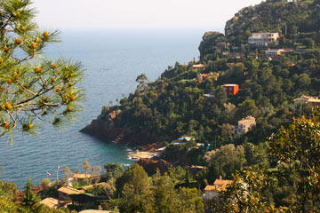
In bright sunshine we continued west along the Mediterranean coast with a view to villas and palms, cliffs and beaches - and the bright blue sea. Lunch in the last little harbor, where the harbor-master gave lunch-power to Green Car. An hour later we continued at the coastal road, snaking in and out, up and down until we went inland to Mas des Graviers. Jan-Olaf Williums we had raced with in the Rally had invited us to visit his wine-farm. A more beautiful place is hard to imagine. Unfortunately he and his partner was not there, but Doris the caretaker gave us a warm welcome with wine and a delicious dinner. An entertaining evening was spent with her and a pair of interesting guests from Germany, visiting at the same time.
Nina
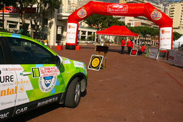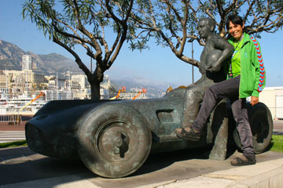
In the morning all cars speeded through a slalom-track in Monaco harbor. The big cars came a bit slower through the track than the small ones, and Green Car was not among the fastest, even if Hjalte turned the steering wheel frantically. Then we had to say goodbye to Torben and Merete, whom we hope to meet again. All the participants from the short and long Rally got together at a grand lunch in Monaco's distinguished Sporting Club. Winners in the different categories got big trophies and was photographed. We finished eight out of twelve, ranked by over-all consumption and time on the special stages. I wore my silk dress and Hjalte had shirt and tie. On the tables fine wine was lined up but it did not become a real party as everybody had to drive home. Back at the grand Fairmont Hotel we packed the car with our worn camping gear and all the other strange equipment. At the extravangant hotel we felt like visitors from an alien planet. Only back in the cosy Villa Aramis in Nice we became ourselves again. But it had been wonderful and fun experience to participate in the Rally, and if we get the opportunity we will do it again!
Nina
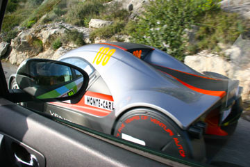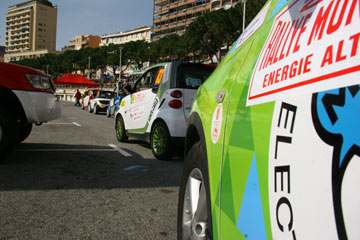
I, Green Car, was dressed up almost like a real racing car. It was great fun to overtake the sports cars, even if it took some energy. It was all like a wonderful dream, especially the special stages where I could go full speed. The fir-trees shot past on the narrow curvy road with cliffs to one side and the free fall to the other side. I took care not to get a flat tire on the sharp rocks, but I could not stop speeding. I did not notice that the special stage had been shortened and I was loosing my temper when suddenly a learner's car blocked the road in front of me. And then it was just rolling back to Monaco in a leisurely tempo. At the Parc Ferme in Monaco the cars from the long three-day Rally for Alternative Energy cars were beginning to arrive. Mostly hybrid cars, but also cars on LPG-gas and bio-diesel. Four electric Tesla sports cars were the only electric cars competing in the long Rally. For me Green Car it was great to be in the company of so many different rally cars, more than 120. We were talking all night and I told about Asia and America, where none of the other cars had set their tires. The long rally was a success, even if a rock-slide had blocked the road, but fortunately nobody were harmed.
All the best, Green Car
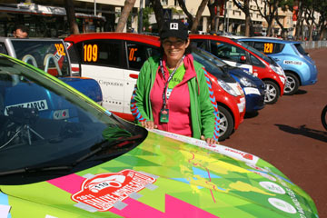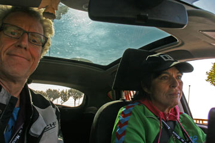
Our goal was to complete the rally. As soon as we started I got my nerves under control. I accelerated and soon we were at the begin of the hair-pin curves. Our strategy was not to slow down but to get in front and not risking being slowed down on the special stage by slow-moving cars. Hjalte and I were a super team. Hjalte navigated and I drove Green Car. In the clear morning sun we raced through the tight curves. The clouds were under us, blanketing the Mediterranean, it was like flying. The special stage where we had to drive fast to keep the ideal time on a really hair-rising road also went well, except for one point where we thought we were going too fast and slowed down. We reached Monaco 15 minutes early. Mid-day we had seven hours charging-pause and Torben took us for a walk in the old Monaco, perched on a cliff above the sea. When the Rally took off again in the late afternoon we were still fired up. On the tough special stage I felt really fine racing. Only the fear of meeting on-coming cars kept my speed down. We returned to Monaco very satisfied with the Rally and our debut - everything can be improved but we reached our goal: to complete the Monte Carlo Rally for electric cars. We had a lot of fun and no accidents. We will get the result tomorrow, after the last test.
Nina
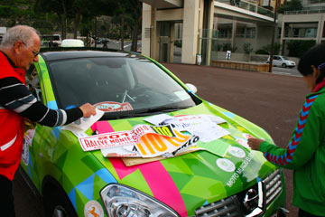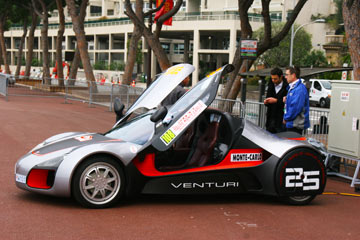
At the Grimaldi Forum we were invited to test-drive the new Nissan Leaf, Car of the Year 2011. The car was crisp and easy to drive. All participants in the Electric Rally were booked in at the fancy Hotel Fairmont. We hurried back to Nice to collect our stuff and deposit in our room with a balcony right at the Formula 1 track. Green Car got the world's most expensive car-wash and we drove it down to the Parc Fermé, where we met Torben. We got a load of stickers and dressed up Green Car, like the other 12 cars in our group of the rally. Favorites to win are the last year's winners Jan and Alexandra from Norway in a Citroen C Zero and a team from Monaco in a Venturi Volage, a super smart sports-car with electric motors in all four wheels. All the participants are nice people, only the Venturi team is a bit reserved, rumors are they got a problem with their car. Every car got a charging point and we went out to eat with Torben.
Nina
 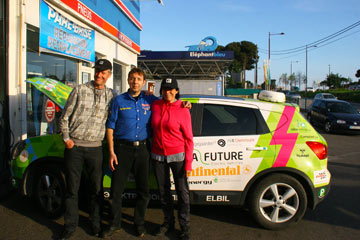
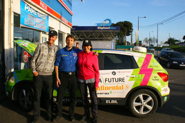
Early in the morning we drove to Monaco to rehearse the second special stage of the Rally, without a spare tire. We went more slowly on the hair-raising curves. In Monaco all the parking-garages have charging points and Green Car was hooked up. We then walked along the harbor to the Grimaldi Forum where Monaco stages a very fine exhibition of electric cars, the EVER 2011. Many new ones from European companies that did not exhibit in Detroit. Hjalte in particular was intrigued by the Active Wheel from Michelin, electric motor, active suspension and brakes all inside the wheel. The fruit of 12 years of development. In the afternoon we went to Antibes to get the new tire. The boss and the people were very friendly. But behold! The tire sent from the central warehouse was wrong size. Green Car now has to compete using the spare wheel (which is a real wheel). On the way back to Nice we had to charge clandestinely from the yacht harbor for an hour. Back in the hotel-bed Nina got real car-sick from watching the video Hjalte had shot in the morning from the special stage.
Nina and Hjalte
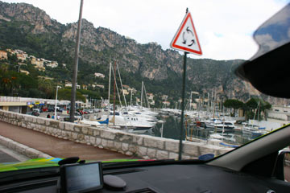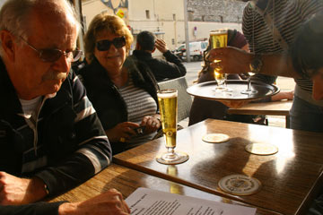
Hjalte and Nina was on the phone all morning. They have promised me a new tire to replace the one that got ruined yesterday. It was drizzling when Hjalte and Nina cautiously went through the first route without a spare tire. While negotiating the curves they enjoyed small arguments in the car. Late in the afternoon Torben and Merete came over with the name-tags they shall put on my side. Without their help and friendship I do not think I could do that rally. They all went down to a cafe and enjoyed a glass of wine and a beer in the last rays of the sun.
Greetings from Green Car
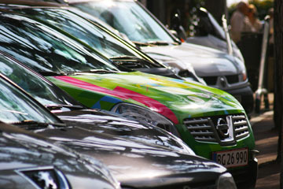
Today we have trained for the long regularity-test that all 130 cars in the rally have to do. I was sitting with the stop-watch and had the ideal-time noted. "Faster in the bends" I said to Nina, while I watched with a beating heart the abyss shoot past. Nina was almost through the whole test and hit the accelerator. A sharp stone got in the way. We both heard the sound of escaping air when the tire exploded. In La Turbie on the way home we had a cup of coffee. Automobile Club de Monaco has put the list of participants on the web and we are up against hard-core rally-drivers. Our goal is to complete the rally. And the most important is to get back safe.
Hjalte